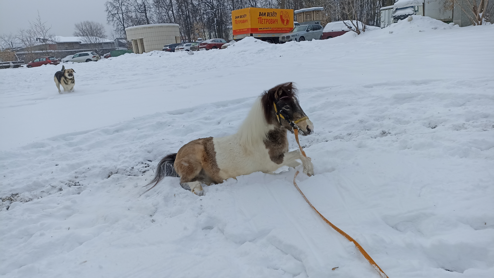

User name: Marina Fomina.
Email: m****okt@gmail.сом.
Phone: +7(977)***-**-**.
Discord: Marina (@Keshiyuri).
Address: Moscow.
I'm 23 years old, and I'm trying to write codes for the first time, without having any experience behind my back. I went to the RSS courses to get basic experience in programming. I don't have English skills, I haven't studied languages. I learned from my friend that there are courses for people like me. It became very interesting to me, it gives me new plot twists in my life.
This site is my first work with code. Having only theoretical knowledge, it was incredibly difficult for me to bring to life what was in my head. I was very afraid to use flex elements because I don't understand them well. I tried to make a basement and a head through other teams, but something always happened wrong for me. So I turned to flex elements, reread the article again and I did it! I was happy that I didn't have extra padding, and my basement didn't hang in the middle of the text!
And this is my pony Caramel. She is very active and cheerful. Just showing it to you.